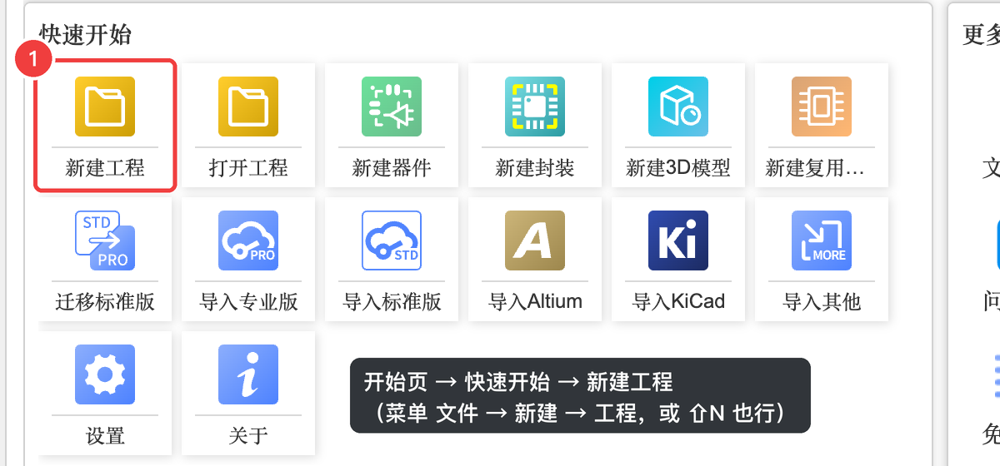
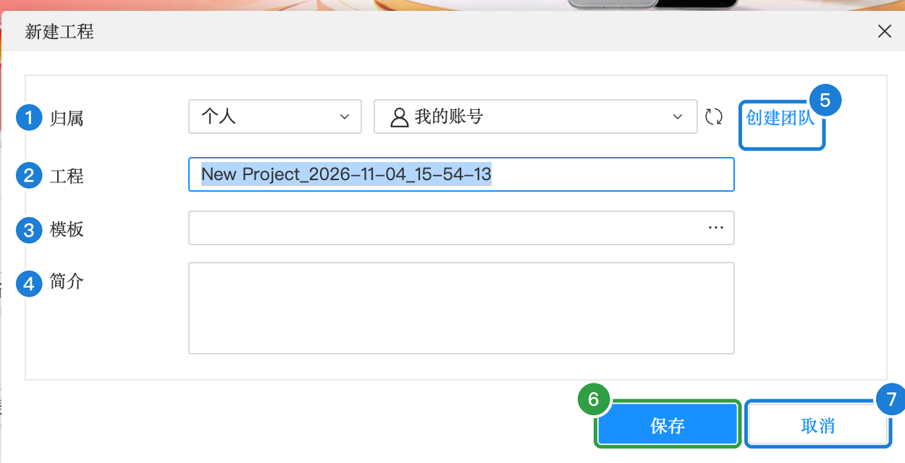
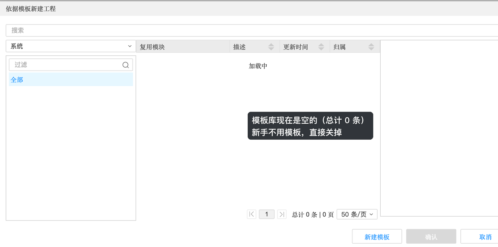
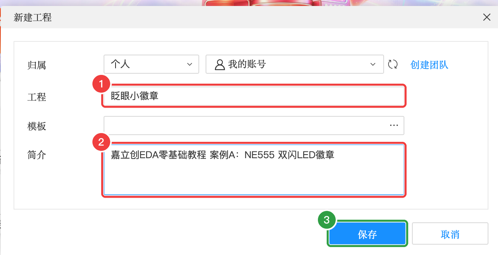
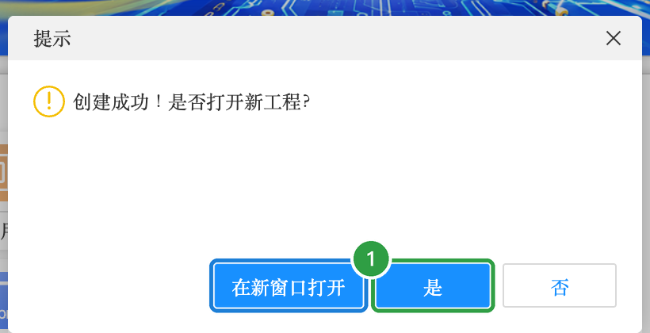
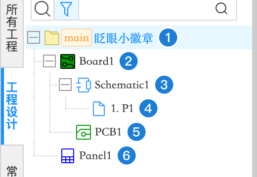

A-1 新建工程
做任何板子的第一步都是新建一个工程。这一步很简单，但顺便要搞清楚工程里的“板子、原理图、图页、PCB”是什么关系——后面每一步都会用到。
第 1 步：打开「新建工程」#
- 在「开始页」的快速开始区域，点「新建工程」

第 2 步：填写新建工程对话框#
弹出的对话框里，图中的编号对应下面的说明表：

新建工程对话框
| 编号 | 属性 | 含义（大白话） | 本例怎么填 | 什么时候需要改 |
|---|---|---|---|---|
| 1 | 归属 | 这个工程放在谁名下：「个人」放在你自己的账号里；选团队就放进团队空间，团队成员都能看到 | 个人 / 我的账号 | 和同学合作做项目时选团队 |
| 2 | 工程 | 工程名称。默认是 “New Project_日期_时间”，一定要改成看得懂的名字 | 眨眼小徽章 | 每个新作品都起一个新名字 |
| 3 | 模板 | 用已有的“工程模板”来新建（模板里可以预先放好图纸、规则等）。点右边的「…」会打开模板列表 | 不用模板，保持空 | 团队有统一模板时 |
| 4 | 简介 | 工程的说明文字，只给人看，不影响设计 | 嘉立创EDA零基础教程 案例A：NE555 双闪LED徽章 | 随意 |
| 5 | 创建团队 | 还没有团队时，可以从这里新建一个 | 不用 | 需要多人协作时 |
| 6 | 保存 | 创建工程 | 点它 | — |
| 7 | 取消 | 关掉对话框，什么都不创建 | — | — |
点「模板」右边的「…」会弹出“依据模板新建工程”窗口。现在模板库是空的，直接关掉就行：

- 在「工程」里输入
眨眼小徽章（输入中文时记得切回中文输入法，输完再切回英文） - 「简介」里随便写一句说明
- 点「保存」

创建成功后会问你“是否打开新工程？”：

- 点「是」
第 3 步：认识工程树#
工程打开后，左侧「工程设计」面板里会出现这个工程的结构，叫工程树：

| 编号 | 名称 | 是什么 |
|---|---|---|
| 1 | 眨眼小徽章（main） | 工程本身，也就是整个“项目文件夹”。main 表示主分支（版本管理用，不用管） |
| 2 | Board1 | 板子：把“一张原理图”和“一块 PCB”绑在一起的组合。同一个工程里可以有好几块板子 |
| 3 | Schematic1 | 原理图：画电路连接关系的文件 |
| 4 | 1.P1 | 图页：原理图的第 1 页。电路复杂时可以分好几页画，本例 1 页就够 |
| 5 | PCB1 | PCB：电路板设计文件。它和 Schematic1 同属 Board1，所以原理图能一键“转换”到这块 PCB |
| 6 | Panel1 | 面板：用来设计亚克力面板、铭牌等（第 11 章），本例不用 |
- 双击 1.P1，打开原理图图页，进入下一步